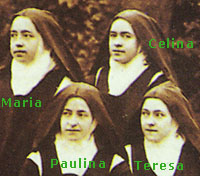
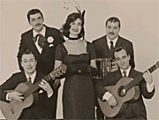

Sta. Teresita:
< 26/40 >
-
« No esperaba sufrir de esta manera...; sufro como un niño.
... No quiero pedir a Dios sufrimientos mayores; nunca.
Si él quiere hacerlos mayores, los soportaré con gusto
y alegría, pues vendrán de su mano. Pero soy demasiado
pequeña para tener fuerzas por mí misma.
Si yo pidiese sufrimientos, serían sufrimientos míos
y tendría que soportarlos yo sola; y yo nunca he podido
hacer nada sola.»
Dos semanas después (26/8), Paulina le comentaba: "Estás hecha para sufrir mucho, tienes el temple para eso" y ella contestó:
-
«
Para los sufrimientos del alma, sí; puedo soportar mucho...
Pero para los sufrimientos del cuerpo, soy como un niñito pequeno ...
No pienso, sufro minuto a minuto. »
Partituras (y midis) de música latina para guitarra. Vale la pena pegarle una mirada a los valsecitos venezolanos de Antonio Lauro, por ej.
Umbrío por la pena, casi bruno,
porque la pena tizna cuando estalla,
donde yo no me hallo no se halla
hombre más apenado que ninguno.
Sobre la pena duermo solo y uno,
pena es mi paz y pena mi batalla,
perro que ni me deja ni se calla,
siempre a su dueño fiel, pero importuno.
Cardos y penas llevo por corona,
cardos y penas siembran sus leopardos
y no me dejan bueno hueso alguno.
No podrá con la pena mi persona
rodeada de penas y de cardos:
¡cuánto penar para morirse uno!
Miguel Hernández
Tanto penar para morirse uno
tanto marchar para caer en cerco
tanto luchar sin resultado alguno
terco en mi error, y en mi desgracia terco.
Tanto atrojar para morir ayuno
tanto huir del dolor al que me acerco
tanta amistad para no hallar ninguno
hollado al fin por el rebaño puerco.
Oh silencio de Cristo ante Pilato.
Silencio de oro. Tanto inepto alarde!
Oh logrado por fin silencio de oro.
Desdén ante el procónsul insensato
áureo silencio del caer la tarde
que muere empurpurada en su decoro.
Leonardo Castellani
(Hay otro verso que también proviene de Miguel Hernández en este soneto; no da para hacer un concurso, pero bueno... a ver quién lo encuentra ).
Sta. Teresita:
< 25/40 >
Novicia(16-17 años)
La toma de hábito es el 10 de enero de 1889.
Lo precede un retiro de cuatro días,
que Teresa pasa sola, en su celda; la única
comunicación es por escrito. Se conservan
algunas cartas
(o mejor "billetes": 74 - 79). Algunos fragmentos:
-
El pobre corderito no puede decir nada a Jesús, y sobre todo Jesús no le dice
absolutamente nada a él. Pide por él, para que al menos su retiro agrade al
corazón del UNICO que sabe leer en lo más profundo de su alma...
Hoy aún más que ayer, si es que esto es posible, he estado privada de todo consuelo. Le doy gracias a Jesús, que piensa que eso es bueno para mi alma; además, si me consolase, quizás yo me detendría en esas dulzuras, y él quiere que todo sea para él...
Pídele a Jesús que sea muy generosa durante mis ejercicios espirituales. ¡Él me ACRIBILLA a alfilerazos, la pobre pelotita ya no puede más, por todas partes está llena de pequeños agujeros que la hacen sufrir más que si sólo tuviera uno grande...!
Al lado de Jesús, nada, ¡sequedad...!, ¡sueño...! ¡Pero al menos, hay silencio...! El silencio hace bien al alma...
Hasta varios años después, siguió con dificultades para comunicarse con sus superioras:
-
... la dificultad que yo tenía para abrir mi alma, aun cuando
proviniese de mi sencillez, era un auténtico problema para mí. Lo reconozco
hoy que, sin dejar de ser sencilla, [71rº] expreso con gran facilidad lo que
pienso.
Teresa mantenía la paz en los sufrimientos. Y, según los testimonios, su cumplimiento de los deberes de religiosa y su aplicación eran ejemplares.
-
A partir de la toma de hábito, yo había recibido ya abundantes luces sobre la
perfección religiosa, especialmente respecto al voto de pobreza. Durante el
postulantado, me gustaba tener cosas bonitas para mi uso y encontrar a mano
todo lo que necesitaba. "Mi Director" soportaba aquello con paciencia, pues no
es amigo de enseñárselo todo a las almas de una vez. Normalmente va dando sus
luces poco a poco.
(Al principio de mi vida espiritual, hacia los 13 ó los 14 años, me preguntaba
qué progresos tendría que hacer más adelante, pues creía que no podría
comprender ya mejor la perfección. Pero no tardé en convencerme de que cuanto
más adelanta uno en este camino, más lejos se ve del final. Por eso, ahora me
resigno a verme siempre imperfecta, y encuentro en ello mi alegría...)
...
Hacía también grandes esfuerzos por no defenderme, lo cual me resultaba muy difícil, sobre todo con nuestra maestra de novicias, a la que no quería ocultarle nada.
He aquí mi primera victoria, que no fue grande, pero que me costó mucho. Se encontró roto un vasito colocado detrás de una ventana. Nuestra maestra, creyendo que había sido yo quien lo había tirado, me lo enseñó, diciendo que otra vez tuviera más cuidado. Sin decir nada, besé el suelo y prometí ser más cuidadosa en adelante.
Debido a mi poca virtud, estos actos de vencimiento me costaban mucho, y tenía que pensar que en el juicio final todo saldrá a la luz. Me hacía también esta reflexión: cuando uno cumple con su deber, sin excusarse nunca, nadie lo sabe; las imperfecciones, por el contrario, se dejan ver enseguida...
Me aplicaba, sobre todo, a la práctica de las virtudes pequeñas, al no tener facilidad para practicar las grandes. Así, por ejemplo, me gustaba plegar las capas que dejaban olvidadas las hermanas y prestarles todos los pequeños servicios que podía...
Ms A Cap 7
Mientras tanto, Teresa va desarrollando nuevas devociones: la de la Santa Faz, sobre todo, que ocupará un lugar muy importante en su vida (y lo agregará a su nombre de religiosa). Y el cántico del "Siervo de Yahvé", de Isaías, que se lee el Viernes Santo.
Finalmente, la profesión se fija para el 8 de septiembre.
Un amigo lector, que cuenta a Bloy y al Apocalipsis entre sus intereses, se pregunta:
-
¿Qué diría hoy León Bloy sobre las últimas noticias, cuando el sexto ángel
derramó su copa sobre el gran río Eufrates y se prepara el camino a los
reyes del oriente?
Sta. Teresita:
< 24/40 >
¿Hubo un progreso en la vida de Teresa ? Entra al convento
a los quince años y muere a los veinticuatro; ¿ es más sabia/santa,
—ve mejor— la Teresa de los últimos años que la
Teresa adolescente ?
Parece bastante claro que sí. Los últimos dos años son algo así
como su florecimiento.
Aunque por otro lado,
a la misma Teresa tal vez le hubiera resultado ridídula esa
idea —o esa ambición— de crecer, de progresar...
sobre todo cuando ese progreso es visto como un
enriquecerse; la contabilidad de méritos, obras y virtudes,
como una acumulación de capital...
Hay una anécdota de su niñez, contada por ella misma.
-
Un día, Leonia, creyéndose ya demasiado mayor para jugar a las muñecas, vino a
nuestro encuentro con una cesta llena de vestiditos y de preciosos retazos
para hacer más. Encima de todo venía acostada su muñeca.
"Tomad, hermanitas -nos dijo-, escoged, os lo doy todo para vosotras".
Celina alargó la mano y cogió un mazo de orlas de colores que le gustaba. Tras un momento de reflexión, yo alargué a mi vez la mano, diciendo:
"¡Yo lo escojo todo!", y cogí la cesta sin más ceremonias.
"No elegiría nada; yo no quiero otra cosa que lo que Dios quiera."
Pero una cosa prefigura la otra; prefiguración que no es sólo un símbolo sino un fundamento y que, al pasar de un plano a otro, toma formas que pueden parecer contrarias. Pero "no escoger nada" es para Teresa "escoger todo -lo que Dios quiere".
Comenta von Balthasar:
-
«Yo lo escojo todo», había dicho la niñita Teresa. Y
este todo, que ella efectivamente escogió,
se convierte para ella en el punto
de partida del no escoger jamás nada. [...]
Este activo escogerlo todo en el estado secular era la condición previa para
no escoger ya más nada en el estado religioso, como la familia, en la vida de
Teresa, era la previa imagen y semejanza de la orden y de la Iglesia.
Según La Nación , en la galería Rubbers se está realizando —desde hoy hasta el 26— una exposición de pinturas de Jacobo Fijman.
Interesante...
Busco, y no encuentro más sobre la exposición, pero en cambio encuentro esto :
"Visionaria inspirada en Jacobo Fijman",
una obra audiovisual en Flash bastante
elaborada....
Estética
un poco estereotipada, dentro de este tipo de obras, quizás...
Y la siempre sospechosa fascinación por la locura, y por
pseudo-místicas para estetas prontos a confundir lo sensual con
lo espiritual, quizás...
Pero quizás no; o no tanto.
En todo caso, lo que dice al final -crítico- sobre el Arte desligado de
todo, tiene lo suyo.
Muy bueno. Recomendable para los que tendemos a creer demasiado en el poder oracular de Google.
Con referencia a las hermanas Martin y las "familias de religiosos", Ignacio me comenta algunos casos dentro de la tradición cisterciense:
-
San Bernardo entró al monasterio con buena parte de los varones de la familia, que -si no recuerdo mal, porque cito de memoria- incluía primos, padre -creo que entró después que él- y hermano o hermanos (uno de ellos canonizado, además: San Gerardo).
Más recientemente, los hermanos Löb: seis religiosos (tres monjes, tres monjas y -junto con un hermano laico- asesinados por los nazis). Para más información sobre los Löb, podés ver acá
-
Bernardo vaciló algún tiempo antes de ingresar en la orden cisterciense. Un día, presa de graves dudas, entró en una iglesia a pedir a Dios que le ayudase a conocer y seguir su voluntad y, al salir, estaba decidido a abrazar la vida de los monjes de Cîteaux. Sus amigos hicieron cuanto pudieron por disuadirle, pero Bernardo no sólo se mantuvo firme en su propósito, sino que se llevó consigo al monasterio a cuatro de sus hermanos y a un tío.
Un íntimo amigo de Bernardo, Hugo de Mâcon (quien más tarde fundó el monasterio de Pontigny y murió siendo obispo de Auxerre), lloraba amargamente ante la idea de separarse de Bernardo; pero dos entrevistas bastaron a éste para convencerle de que le siguiese al monasterio. Para no extendernos demasiado, Bernardo, que unas cuantas semanas antes dudaba de su vocación religiosa, llegó al monasterio acompañado de treinta y un candidatos que hasta poco antes no se habían sentido llamados a la vida monástica. En ese sentido, ningún santo de la era moderna ha igualado a Bernardo, quien poseía una elocuencia irresistible: cuando él se presentaba, las madres temblaban por sus hijos y las esposas por sus maridos.
Sta. Teresita:
< 23/40 >
Postulante (15 años) — (Ms. A, Cap 7)
Teresa entró al convento el 19 de abril de 1888; será
postulante durante nueve meses; el 10 de enero de 1889
será la toma de hábito, con lo que pasa a ser novicia.
Igualmente, su tiempo de postulante lo vive en el noviciado.
Teresa ya conocía a la mayor parte de las monjas (alrededor de 20).
Tiene 3 compañeras: una de ellas su hermana María, entonces
novicia. Sus referentes son: la Maestra de Novicias (María
de los Ángeles); la priora (María de Gonzaga) y la fundadora
del convento (Madre Genoveva), una especie de prócer que morirá
pocos años después.
La priora, por lo que uno puede sospechar, no era muy estricta;
de esas personas demasiado preocupadas por "hacerse querer".
Teresa enseguida toma conciencia de que no debe ceder
a la tentación de los afectos "naturales", y trata de no apegarse
a ella. Mucho más tarde le dirá:
-
Recuerdo que, siendo postulante, me venían a veces tan fuertes
tentaciones de entrar en su celda por mi satisfacción personal, por encontrar
algunas gotas de alegría, que me veía obligada a pasar a toda prisa por
delante de la procura [despacho] y a agarrarme fuerte
al pasamanos de la escalera;
me venían a la cabeza un montón de permisos que pedir. En una palabra,
encontraba mil razones para dar gusto a mi naturaleza...
¡Cuanto me alegro ahora de todas las renuncias que me
impuse desde el comienzo de mi vida religiosa!
Ahora gozo ya del premio
prometido a los que luchan con valentía.
Siento que ya no necesito negarme todos los consuelos del corazón,
pues mi alma está afianzada en el Unico a quien quería amar.
Veo feliz que, amándolo a él, el corazón se ensancha y que
puede dar un cariño incomparablemente mayor a los que ama que si
se encerrase en un amor egoísta e infructuoso
( Ms C Cap XI)
En conjunto, los primeros años de Teresa son tranquilos; feliz, pero gracias a no haberse hecho ilusiones antes sobre la vida conventual; feliz, pero entre las espinas.
-
Todo me parecía maravilloso. Me creía transportada a un desierto. Nuestra
celdita, sobre todo, me encantaba.
[...]
¡Con qué alegría tan honda repetía estas palabras: "Estoy aquí, para siempre, para siempre..."!
Aquella dicha no era efímera, no se desvanecería con las ilusiones de los primeros días. ¡Las ilusiones! Dios me concedió la gracia de no llevar NINGUNA al entrar en el Carmelo. Encontré la vida religiosa tal como me la había imaginado.
Ningún sacrificio me extrañó. Y sin embargo, tú sabes bien, Madre querida, que mis primeros pasos encontraron más espinas que rosas...
(Ms. A, Cap 7; la "Madre querida" es Paulina, priora cuando Teresa escribe esto)
También hay que tener en cuenta que el caso de Teresa no es el de aquellas mujeres que se "escapan al convento", para encontrar un refugio frente a una situación social difícil (en lo familiar, afectivo, económico...); Teresa era "una burguesita bien educada", lo cual debía hacerle más duro el comunismo conventual por un lado; y la tosquedad y falta de modales de otras monjas, por el otro. Y al lado de su vida familiar, que había sido tan feliz, cualquier cosa iba a ser menos gratificante a "su naturaleza".
De las cartas de este período, se destaca la que envía a Celina el 23 de julio de 1888; en esos días, el padre había tenido su primer ataque mental serio, por lo que Teresa trata de infundirle ánimo (las dos sentirían algo de culpa), mientras no cesa en sus recomendaciones ("no te cases! ", es el consejo tácito en muchas referencias al "lirio blanco y lirio amarillo").
A los lectores que han metido algún que otro comentario o me escribieron (sea a favor o en contra... mientras sea con buena leche): muchas gracias.
Y a los que -de entre ellos- debería haber contestado y todavía no lo hice: disculpas; y paciencia.
Y a los que leen pero no comentan ni escriben: a ver si se ponen media pila (como se dice por estos pagos; y los lectores via Babelfish y similares, que se las rebusquen como puedan...)
En el listado de visitas al blog, encuentro esto (no pongo el link por discreción; copie y pegue la dirección, si gusta): http://ar.geocities.com/pastora_lucy/Mi_pagina.html
Ahora sí, me siento realizado.
Sta. Teresita:
< 22/40 >
Las hermanas Martin
Es hora de hablar de las hermanas (en el sentido "carnal"
de la palabra) de Teresa.
Exceptuando los que murieron
bebés, eran cinco (Teresa + 4 ) hermanas, Teresa es la menor.
En orden de edades (en paréntesis va la diferencia de edad
con Teresa) son:
María (+13), Paulina (+11), Leonia (+10),
Celina (+4), Teresa.

Excepto Leonia (que entró tardíamente al convento
de las clarisas), el resto entraron al mismo convento
carmelita de Lisieux. De allí la foto, de 1896.
Esta otra foto es algo anterior,
(abril 1895), por lo cual Celina (la última en entrar)
tiene el velo blanco de las novicias (las otras son
María Guerin, prima de las Martin; y María de los Angeles,
maestra de novicias de Teresa).
{kind=link}
Vamos con una mención para cada una (con el nombre que adoptaron como religiosas; y el rasgo físico con el cual yo las aprendí a distinguir... por si a alguien le sirve).
Paulina, madre Inés de Jesús ("cara de vieja", rasgos alargados, narigona). Fue la primera en entrar al Carmelo. Con capacidad de gobierno, es pronto elegida priora del convento entre 1893-1896 (y más tarde reasume, y el Papa en 1923 la confirma en forma vitalicia). Ella, madre adoptiva de Teresa en su niñez, es quien le manda Teresa escribir sus recuerdos (primera parte de "Historia de un alma"). Y a su muerte es quien queda a cargo de todo lo relacionado con su hermana...
María, sor María del Sagrado Corazón ("cara redonda"). La hermana mayor y madrina de Teresa. Es quien gobierna la casa, y cuida a Teresa durante su enfermedad (a sus diez años); entra al Carmelo cuatro años después de Paulina, uno y medio antes que Teresa (comparten el noviciado). En 1896 pide a Teresa un resumen de "su doctrina", (que será el Manuscrito B).
Leonia, sor Francisca Teresa (el patito feo). La más problemática, carácter débil y difícil. Tres intentos frustrados de vida religiosa; la cuarta, después de la muerte de Teresa, es la vencida : clarisa en la Visitación de Caén. Teresa le escribe para darle fuerzas, y se duele de sus sufrimientos y de su "falta de energía".
Celina, sor Genoveva de Santa Teresa ("cara de muchacho", expresiva). La hermana más íntima; queda cuidando al padre enfermo, viviendo con sus tíos (Guerin). Teresa le escribe desde el convento muchas cartas importantes, con exhortaciones a "aguantar" (había recibido varias propuestas de matrimonio...). Cuando muere el padre, entra al convento, y Teresa será su maestra de novicias. Poco más tarde, ella será la enfermera de Teresa en su larga agonía.
También habría que agregar a María Guerin,
prima de las hermanas Martin, que entró al mismo convento
un año después que Celina.
Todas las hermanas de Teresa
tuvieron vida larga (no así la prima
que murió de tuberculosis en 1905) y testificaron en los
procesos de canonización.
Si a ud. le parece un abuso esto de que
todas las hermanas se hagan monjas —y encima
casi todas en el mismo convento— y se está
diciendo "Qué barbaridad, qué tiempos... hoy día esto
nos parece un escándalo o poco menos "... le digo
que los tiempos cambiaron, sí; pero no tanto. También
en esa época esto no fue bien visto por casi nadie.
A Celina sus parientes le dijeron de todo cuando decidió
entrar...
Y en el convento
tampoco querían saber nada; ya más de dos hermanas
les parecía una demasía... Pero al final
las Martin siempre se salían con la suya.
Sta. Teresita:
< 21/40 >
Consolar a Dios
Contra una de las corrupciones más extendidas
de lo religioso: la de buscar "consuelos" en
la religión, en la idea del Cielo y de Dios
(un Dios que en ese caso no pasa de
ser una imaginación y una mentira), Teresita
opone una religiosidad sacrificada de verdad,
sin consuelos.
Ya copié una carta
a Celina donde le dice: hay que resistir la tentación
de despertar a Jesús, que duerme en la barca, entre el viento
y la oscuridad; hay que hacer de nuestro "aguante" su descanso;
de nuestros corazones su almohada:
-
Jesús duerme... y
Celina no lo ve porque la noche ha caído sobre la navecilla... Celina no oye
la voz de Jesús. El viento sopla y ella lo oye soplar, ve las tinieblas... y
Jesús sigue durmiendo. Sin embargo, si se despertara solamente un instante,
sólo tendría que "ordenar al viento y al mar, y vendría una gran calma", y la
noche sería más clara que el día. Celina vería la mirada divina de Jesús, y su
alma quedaría consolada...
Pero entonces Jesús ya no dormiría, ¡y está tan cansado...! [...] en la barquilla de su esposa querida Nuestro Señor encuentra otra almohada mucho más suave: el corazón de Celina. [...]
Jesús está contento de verla entre sufrimientos, se siente feliz de recibirlo todo de ella durante la noche... Espera la aurora, y entonces... sí, entonces ¡qué despertar el de Jesús...!
(Carta a Celina, julio de 1983)
-
... Muchos sirven a Jesús cuando los consuela,
pero pocos acceden a hacerle compañía
cuando duerme sobre las olas,
o cuando sufre en el huerto de la agonía.
Quién querrá, pues, servir a Jesús por él mismo?
Lo haremos nosotras!
Celina y Teresa se unirán cada vez más, en ellas se cumplirá la oración de Jesús "Padre, que sean uno, como nosotros somos uno". Sí, Jesús nos prepara ya su Reino, como su Padre se lo había preparado a el; nos lo prepara dejándonos en la tribulación...
(Carta a Celina, 7 de julio de 1984)
Pero donde más brilla, para mí, este aspecto de la espiritualidad
teresiana, es en una pequeña anécdota que encuentro
en el libro de Urs von Balthasar (citado de una edición
"no crítica" de la Historia de un alma; yo no lo pude encontrar;
aunque suena auténtico):
Una de las novicias (recordar que ella hizo de maestra
de novicias varios años) le confió una promesa
que había hecho: mostrarse siempre alegre ante sus compañeras,
ocultar las penas y disgustos, y "sólo llorar sus
tristezas ante Dios".
Pero Teresita, en lugar de felicitarla,
la reprende:
-
...Llorar delante de Dios! De ningún modo.
No has de mostrarte triste, ante Dios mucho menos
que ante las criaturas.
Cómo...! Este Maestro bueno no tiene para consolar su corazón otra cosa que nuestros monasterios; viene a nosotras a descansar, a olvidar las quejas continuas de sus amigos del mundo —porque lo más frecuente en la tierra, en lugar de reconocer el valor de la cruz, es llorar y gemir—. Y vas a hacer como el común de los mortales ?
En verdad, eso no es amor desinteresado. A nosotras nos toca consolar a Jesús, no a El consolarnos a nosotras.
Y es dura, también; sobre todo para los que no tienen muchas alegrías en el mundo...
Pero así es Teresa, blandita en apariencia y dura en el fondo, como debe ser (y al revés de tantos duros que se ven por ahí).
El Papa anunció que el Jueves Santo publicará su nueva encíclica, sobre la Eucaristía.
Otra noticia vaticana: el viernes pasado el Papa hizo algunas observaciones dirigidas a los sacerdotes en general. Además de recordar que, al dar la confesión, el sacerdote
-
«debe referir sin variantes ideológicas las enseñanzas genuinas de la Iglesia. ...
En particular, quiero llamar la atención sobre el deber de adherir al Magisterio de la Iglesia acerca de los complejos problemas planteados en el campo bioético y de la normativa moral y canónica en el ámbito matrimonial.
A veces sucede que los fieles, a propósito de ciertas cuestiones éticas de actualidad, salen de la confesión con ideas bastante confusas, en parte porque tampoco encuentran en los confesores la misma línea de juicio...
En realidad, quienes ejercen en nombre de Dios y de la Iglesia este delicado ministerio tienen el preciso deber de no cultivar, y menos aún manifestar en el momento de la confesión, valoraciones personales no conformes con lo que la Iglesia enseña y proclama...
No se puede confundir con el amor el faltar a la verdad por un malentendido sentido de comprensión.»
Clarín, siempre atento a las exhortaciones papales,
se sintió tocado;
y hoy nos cuenta que los médicos son malos pacientes: se automedican y
"se dejan estar"...
Claro es que se trata de una parábola. Es que, al tratarse de un
diario laico los redactores de Clarín
se ven obligados a disfrazar sus acuciantes preocupaciones religiosas
con temáticas mundanas; pero el lector atento sabrá discernir
que en el fondo está hablando de los "médicos de almas"...
Uno de los afiches publicitarios de la campaña presidencial argentina contiene esta sola frase, en letras grandes:
- La corrupción alguien la hizo.
Y podríamos contestar:
La miseria de nuestro lenguaje, también alguien la hizo.
Y yo sospecho que los redactores publicitarios -junto con los periodistas-
tienen que ver...
(y ya que estamos...)
De las lecturas de la misa de ayer, ese hermoso y famoso salmo (136/137) de los judíos desterrados en Babilonia, que se niegan a la alegría y que se juran no olvidar su amor (Jerusalén, imagen de tantas cosas).
-
En Babilonia, a orilla de sus ríos,
sentados llorábamos
al acordarnos de Sión.
En los sauces que había allí
dejábamos colgadas nuestras cítaras.
Allí nuestros deportadores nos pedían una canción,
nuestros raptores nos pedían alegría:
"¡Cantadnos un cántico de Sión!"
¿Cómo cantar un canto de Yahveh
en tierra extraña?
¡Si me olvido de ti, Jerusalén,
que mi mano derecha se me seque!
Que mi lengua se pegue al paladar
si de ti no me acuerdo,
si no pongo a Jerusalén
en la cima de mis gozos.
Un indicio de que te estás armando un Dios a tu imagen y semejanza: cuando notás que Dios odia a las mismas personas que vos.
(vía Kairos)
Interesante lo de Disputations sobre la Heisenprayer.
Se trata de si es razonable rezar por un suceso pasado.
Por ejemplo: nos enteramos que hace un rato ha habido un accidente en un avión donde viajaba un familiar nuestro; mientras vamos a consultar la lista de muertos rezamos pidiendo que nuestro familiar no figure... lo cual equivale en realidad a pedir que no haya muerto.
¿Tiene sentido eso ? (asumiendo lo que un católico asume sobre la naturaleza y eficacia de la oración, claro).
A favor, Kairos guy dice con gracia:
-
Yo soy de los que rezan "al modo Heisenberg" :
si el resultado de una oración no es aún conocido,
entonces aún no ha sido determinado.
Así que bien puede mi rezo de las 9:00 impedir que
suceda algo a las 8:45 si yo en el momento
no sé lo que ha sucedido....
Ver también los comentarios.
Sta. Teresita:
< 20/40 >
-
«... Jesús es un tesoro escondido,
un bien inestimable que pocas almas saben encontrar
porque está escondido y el mundo ama lo que brilla.
[...]
Para encontrar una cosa escondida,
hay que esconderse también uno mismo.
Nuestra vida ha de ser, pues, un misterio.
Tenemos que parecernos a Jesús, al
Jesús cuyo rostro estaba escondido.
....»
Carta a Celina, 2 de agosto de 1893
Había en mi edición una referencia al Cántico Espiritual de San Juan de la Cruz (muy leído por Teresita); voy a fijarme... y sí, está bastante claro (hasta para uno!).
San Juan pasa varias páginas analizando (crítico autorizado si los hay!) el primer verso de su Cántico -cumbre de la poesía española-:
-
¿Adónde te escondiste,
Amado, y me dejaste con gemido?
Como el ciervo huiste,
habiéndome herido;
salí tras tí clamando y eras ido.
Me pregunto ahora si eso también incluiría renunciar a conocer acá la respuesta a preguntas como "qué sentido tiene mi vida", "cuál es mi misión", etc... (Sin embargo, me digo, bien que Teresita le preguntó a la Ana de Jesús de su sueño-visión: "Dios esta contento de mi? "... )
Entre los indeseables de la web merecen especial mención, como todos sabemos:
- Los "popups" (las páginas que te abren una ventanita con propaganda: haga click aquí).
- Los "banners" (rectángulos de publicidad) animados y/o mentirosos ; con lo de "mentiroso" me refiero a esos formularios falsos (botones, menúes, opciones) que en realidad son una imagen que, hagas click donde hagas, mandan a la víctima a una página de temibles mercaderes.
Pues claro: las dos (tres) cosas juntas: Los popups animados y mentirosos.
Pero... conocen, en esta línea, algo peor ? No?
Bueno, hoy estaba navegando cuando mi PC me abre
esta ventana
(imaginen las letras parpadeantes).
Absolutamente genial.
Y confieso que por un momento dudé y hasta me asusté... durante unos
segundos creí que se había abierto una ventana de consola...
hasta que ví el título de la ventana .... y ese increíble botón
"OK" en medio de una consola en modo texto (además de que
mi Windows no está en C:\Windows ... ).
Son de esas cosas que, si encontrás al que tuvo la idea,
no sabrías si escupirlo o felicitarlo o qué...
Sta. Teresita:
< 19/40 >
Cosas de monjas
Ya que en el mundo laico de hoy uno no está muy informado
de estas cosas,
van algunas explicaciones sobre lo que es la vida de una monja
carmelita, la regla, los rangos, etc (como yo también
soy formado en el laicismo, tengo más ignorancias que conocimientos;
así que se agradecen correcciones o agregados).
Teresita fue monja carmelita. Ser "carmelita" es pertencer
a una orden
(comunidad de religiosos -varones y/o mujeres- que
siguen unas constituciones [1] -aprobadas
por la autoridad eclesiástica- y que pueden su propia
organización jerárquica -un "Superior", "provincias", etc-),
muy antigua, reformada y revivificada en el siglo XVI
por Santa Teresa de Jesús y San Juan de la Cruz.
Otras órdenes son: dominicos, franciscanos, benedictinos,
jesuitas, salesianos, escolapios, agustinos ... y un largo etc;
cada uno tiene su "carisma" y sus particularidades.
La orden carmelita es eminentemente contemplativa y bastante rigurosa
[2].
En el caso de Teresita, al tratarse de una monja que vive en un convento de clausura (las monjas no pueden salir nunca, en principio, ni casi tener contacto con los de afuera), sus únicas relaciones serán con las hermanas que viven en el convento, y con algún que otro sacerdote que va a confesar y/o predicar[3] .
Un religioso normalmente está "casado" con su orden a través de un conjunto establecido de votos; los típicos son los de pobreza (no tener bienes propios), castidad y obediencia (al superior; la priora en el caso de Teresa).
Copio el horario de la regla de entonces (del verano; en invierno varía levemente) [4]:
-
04:45 : Levantarse; oración
06:00 : "Horas menores" del "Oficio Divino" (Prima, Tercia, Sexta y Nona)
07:00 : Misa
08:00 : Desayuno (sopa) , seguido de trabajo
10:00 : Comida , seguida de recreación/limpieza
12:00 : Silencio (siesta, tiempo libre)
13:00 : Trabajo
14:00 : "Oficio divino" (Vísperas), seguido de lectura espiritual
15:00 : Trabajo
17:00 : Oración
18:00 : Cena , seguida de recreación/limpieza
19:45 : "Oficio divino" (Completas)
20:00 : Silencio (tiempo libre)
21:00 : "Oficio divino" (Maitines, Laudes)
22:30 : Examen de conciencia ; acostarse.
Las etapas por los que pasó Teresa son las típicas:
Primero fue postulante ocho meses (abril 1888-enero 1889);
es un período de tanteo, se le asigna una celda pero
no usa el hábito (vestimenta) de la orden.
Después fue novicia, etapa que comienza con
la "toma de hábito", (en el caso carmelita,
el hábito de las novicias difiere por el color blanco
del velo).
Un año y medio después hace la "profesión":
recién ahora formula los votos perpetuos, [5]
recibe el hábito final (velo negro) y pasa a ser
una "hermana profesa" (monja propiamente dicha, diríamos).
De todas maneras, debe seguir en el noviciado durante tres años más.
El noviciado, ámbito de formación, es una sección aparte del
convento, con una "maestra de novicias"; sus integrantes
no forman parte del "capítulo conventual" (y no sé si tiene
voto para elegir a la priora).
Aún después, Teresa seguirá vinculada al noviciado, aunque
en una situación no muy clara... los períodos serían:
- enero 1889 - sept. 1990 (antes de la profesión): novicia
- sept. 1990 - febrero 1993 (después de la profesión) profesa, pero completando su formación en el noviciado. Son sus "tiempos oscuros".
- febrero 1893-septiembre 1893 (a partir del priorato de Paulina) es la "decana del noviciado"; María de Gonzaga, la ex-priora es la nueva maestra de novicias. Es un tiempo de renacer místico y afectivo.
- sept. 1893-marzo 1896: termina el tiempo oficial de su noviciado, pero decide quedarse, como ayudante de María de Gonzaga (su rango es ambiguo, y su posición delicada: de hecho, ella es casi la maestra de novicias)
- marzo 1896 - 1897: reelegida María de Gonzaga priora, designa a Teresa como maestra de novicias, pero ella declina "oficialmente" el cargo (23 años: es demasiado joven para maestra de novicias, algunas cuarentonas); sin embargo, seguirá ejerciéndolo de hecho hasta que su enfermedad se agrava. Es quizás el tiempo más rico de su vida.
Notas
[1]. Por ejemplo: constituciones de los trapenses (cistercienses de estrecha observancia; variante de la orden benedictina).
[2]. Digamos de paso que algunas órdenes incluyen variantes
como los "terciarios": personas que viven en el mundo,
pero pertenecen de un modo particular a la orden.
En la historia, se destaca el caso de Santa Catalina
de Siena, terciaria dominica del siglo XIV.
También son terciarios dos de mis bloggers
predilectos: Tom de Disputations (dominico)
y Steven de Flos Carmeli (carmelita).
Otra cosa: el religioso varón
(monje) puede o no ser -además- sacerdote.
[3]. Digamos también que es típico que una orden (y en particular un convento, que sería la célula de la orden carmelita femenina) tenga que luchar para mantener el equilibrio en el cumplimiento de su regla... en tiempos de Teresita, da la impresión de que el convento estaba más bien relajado, y que Teresita se dolía -muy calladamente- de eso.
[4]. Acá caí en un artículo de investigación histórico sobre la vida conventual en el Buenos Aires colonial; la página, con sus ribetes sociológicos (e incluida en un sitio de un hollydwoodense de lo más delirante que he visto en Internet... que no es poco decir) tiene sin embargo su interés.
[5]. Muchas órdenes incluyen la formulación de "votos temporarios", por uno o dos años, a veces renovables, hasta que finalmente se hacen los votos perpetuos. La constitución carmelita de aquel tiempo, no ; hoy, no sé.
Actualizado. Ignacio me comenta:
-
«...no hay una "orden benedictina" sino congregaciones
y una confederación general de monasterios que siguen la regla de San Benito. El Abad General de los benedictinos no es un "general" como el de los trapenses.
Lleva a confusión el hecho que los benedictinos se presenten como "Fulano
O.S.B". Pues bien, es una tradición que no responde a la realidad pues no hay
una "Ordo Sancti Benedicti". Curiosidades del monaquismo
occidental...»
Sta. Teresita:
< 18 >
La entrada al convento (15 años)
Habíamos dejado a Teresa con sus 15 años recién cumplidos,
(enero 1887)
con la autorización del obispo para entrar al Carmelo
de Lisieux,
pero obligada a esperar hasta Pascua.
Por razones particulares (de lejos no resulta
fácil entender esa ansiedad) esto fue una prueba dura;
pero, como toda prueba aceptada, se transformó
en una bendición: Teresa se propone hacer
rendir el tiempo que se le da, siendo "fiel en lo poco".
Y dirá después que ese mes de marzo ha sido uno de los más
hermosos de su vida.
-
...Convengo en que debí parecer poco razonable al no aceptar gozosa esos tres meses de
destierro. Pero creo también que esta prueba, aunque no lo pareciese, fue muy grande
y me ayudó a crecer mucho en el abandono y en las demás virtudes.
¿Cómo trascurrieron estos tres meses tan ricos en gracias para mi alma...?
Al principio me vino a la cabeza la idea de no molestarme en llevar una vida tan
ordenada como solía. Pero pronto comprendí el valor de aquel tiempo que se me
concedía, y decidí entregarme con más intensidad que nunca a una vida seria y
mortificada.
Cuando digo mortificada, no es para hacer creer que hiciera penitencias, pues nunca las he hecho. Lejos de parecerme a esas almas grandes que desde la niñez practicaron toda serie de mortificaciones, yo no sentía por ellas el menor atractivo. Esto se debía, sin duda, a mi flojedad, pues hubiera podido encontrar, como Celina, mis pequeños recursos para mortificarme. En vez de eso, siempre me dejé mecer entre algodones y cebar como un pajarito que no necesita hacer penitencia...
Mis mortificaciones consistían en doblegar mi voluntad, siempre dispuesta a salirse con la suya; en callar cualquier palabra de réplica; en prestar pequeños servicio sin hacerlos valer; en no apoyar la espalda cuando estaba sentada, etc., etc...
Con la práctica de estas naderías me fui preparando para ser la prometida de Jesús, y no sabría decir cuan dulces recuerdos me ha dejado esta espera...
{kind=link}
Recibe la bendición de su padre, entonces sano. Recibe también un discurso helado y descortés del superior del Carmelo (que se opuso a la entrada de Teresa) y se instala, contentísima, en su celda (cama, y casi nada más; sin agua, electricidad ni calefacción) donde pasará más de cinco años.
Por ahora no es propiamente "religiosa" (no ha profesado), ni siquiera
novicia: es sólo postulante y no se "vestirá de monja"
hasta su toma de hábito...
Bastante tarde (casi demasiado tarde) me decidí a ir a ver Glorias Porteñas. Hace un par de horas, para ser precisos. Fui medio de casualidad; y la pasé muy bien. Y casi fue demasiado tarde, digo, porque -después de varios años- se están yendo.
Así que, porteños con gusto por la música criolla austera (nada de MTV), tienen cuatro oportunidades para ir a verla: domingo , miércoles, sábado y domingo próximos a las 20:30; el 6 de abril es la última función.

Se trata de una recreación de un recital en un club de pueblo de los años treinta, con esos conjuntos anónimos de guitarristas y cantante; tangos (viejos) y rancheras. Todo con buen gusto musical, y con varios toques de humor, sin caer -por suerte- en la parodia.
Acá hay una crítica.
Teatro San Martín, Corrientes 1550, Bs As.
Entrada: $8 y $6. No me digan que no les avisé.
Y ya que estamos, vamos con un valsecito precioso que tocan en la obra: Esquinas porteñas, de Piana y Manzi; letra y audio.